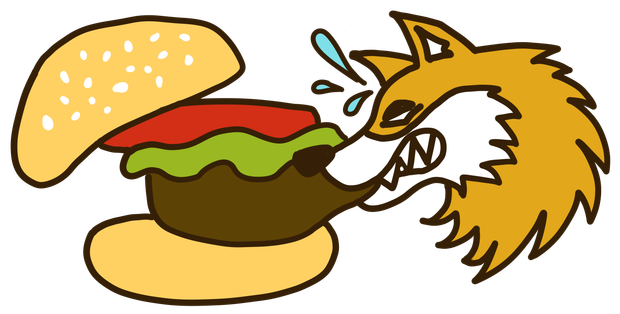
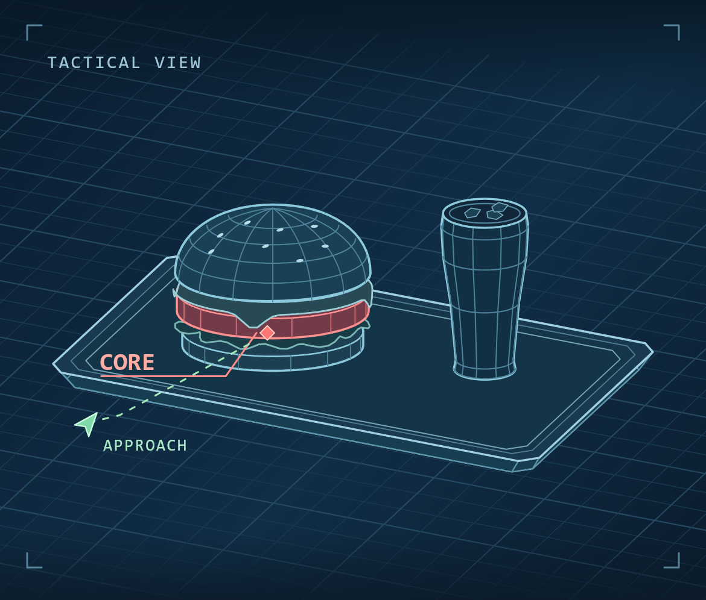
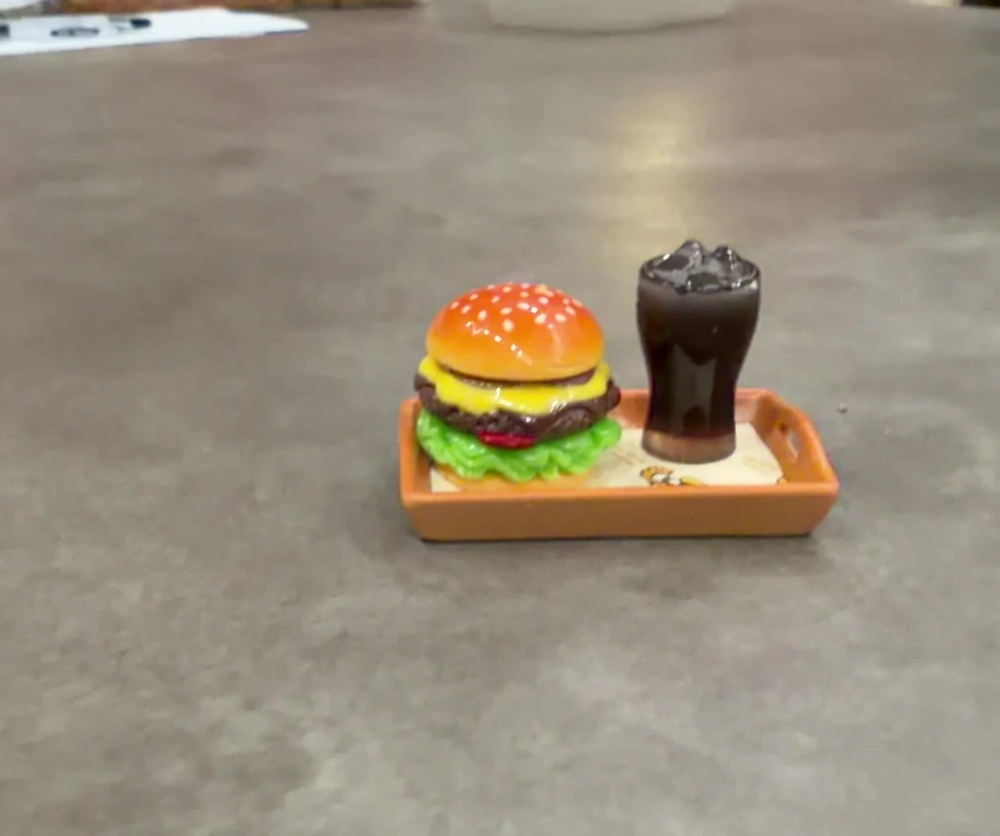

MISSION 01
OPERATION
LUNCH BREAK
BRIEFING
OPERATION / LUNCH BREAK

MISSION OBJECTIVE
从侧面接近，给夹层加酱。
对准露出的 CORE，长按喷射。
- 装备
- KETCHUP
- 携带量
- 80 mL

SCORE 000000
TARGET CORE +400
LUNCH BREAKMISSION 01
AWACS Long Caster
≪ ≫
CORE
KETCHUP80 mL